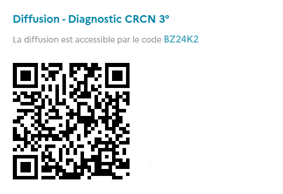
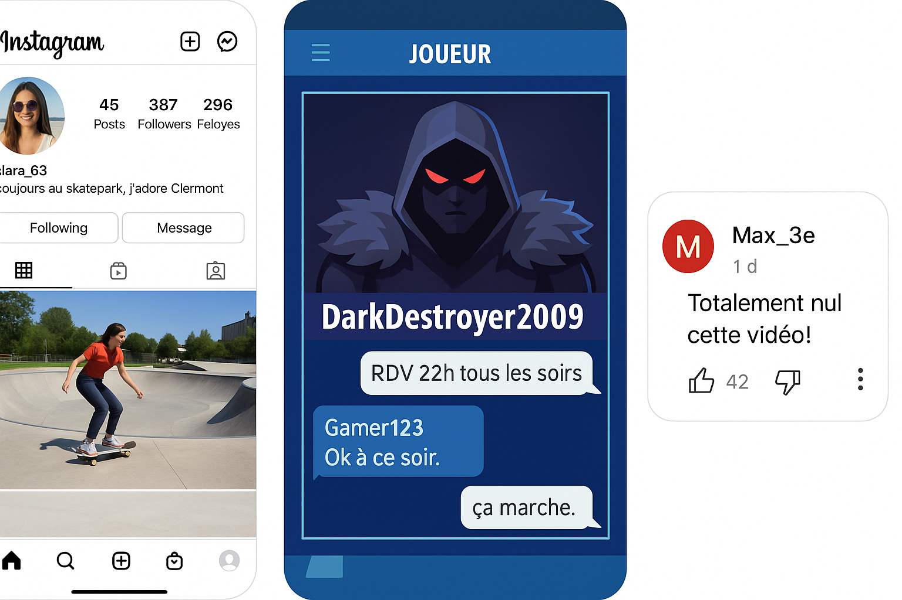

Calendrier Technologie 3ème - 2025/2026
| Date | Cours | Date | Cours |
|---|
Séance 1 — Sécurité & organisation du poste
Objectif : installer un poste sûr et appliquer les règles d’atelier.
- Connaître les règles de sécurité de l’atelier (équipement, comportement, procédures d’urgence).
- Savoir organiser son poste de travail : zone propre, zone outil, zone matériau, zone stockage.
- Être capable d’identifier 8 signes / pictogrammes de sécurité et expliquer leur sens.
- Appliquer la checklist d’installation du poste sans aide (évaluation formative).
- Responsabilité et sécurité en milieu technique.
- Organisation et méthodologie du travail.
- Communication : expliquer oralement les règles à un pair.
Qu’est-ce que la technologie en 3ᵉ ?
La technologie est une discipline du cycle 4 (5ᵉ – 4ᵉ – 3ᵉ). En 3ᵉ, elle constitue la dernière étape avant le lycée et a plusieurs rôles :1. Donner du sens aux sciences
- On part des objets techniques du quotidien (smartphone, vélo électrique, imprimante 3D, etc.).
- On analyse leur fonctionnement, leurs composants, leurs énergies.
- On comprend aussi leurs impacts sur l’environnement et la société.
2. Développer la pensée informatique et la programmation
- Les élèves programment des systèmes simples (cartes électroniques type Arduino/Micro:bit, robots, capteurs).
- Ils apprennent à raisonner en algorithmes (si… alors…, boucles, variables).
3. Concevoir et réaliser un projet
- C’est l’aboutissement du cycle 4 : les élèves travaillent en groupe pour imaginer, modéliser, fabriquer et tester un objet ou système technique.
- Ils utilisent des outils numériques (CAO 3D, simulation, prototypage).
4. Se préparer à l’orientation
- La technologie en 3ᵉ ouvre sur la découverte des métiers et des formations techniques, industrielles, numériques.
- C’est aussi une matière du DNB (Diplôme National du Brevet) (contrôle continu + parfois épreuve orale de projet).
📊 Ce que les élèves acquièrent
- Analyser un objet technique.
- Comprendre énergie, mécanique, informatique, matériaux.
- Concevoir en groupe un objet ou un projet.
- Programmer et utiliser des outils numériques.
- Travailler en équipe et présenter un projet.
La technologie en 3ᵉ, c’est une discipline qui relie sciences, outils numériques et créativité. Elle apprend à comprendre comment les objets qui nous entourent fonctionnent et comment en inventer de nouveaux, tout en respectant la sécurité, l’environnement et le travail collaboratif.
« Quel est l’objet technologique qui a le plus changé votre quotidien ? »
Les pictogrammes de sécurité
Quelques exemples :
|
|
|
|
|
|
Organisation du poste de travail
1.Où ranger ses affaires
- Cartable et affaires personnelles : doivent rester à un endroit précis (ex. sous le bureau ou à un espace défini, pas dans les allées).
- Cahier de techno / feuille : posé bien droit sur le bureau pour prendre des notes.
- Matériel collectif : chaque boîte d’outils, boîte de vis, lunettes de protection → montrer l’endroit exact où ils sont rangés dans la salle.
2. Comment circuler en sécurité
- Toujours marcher, jamais courir (risque de chute avec outils/matériaux).
- Ne pas bloquer les allées → montrer la zone de circulation principale (chemin vers la porte, vers les armoires).
- Respect de la distance de sécurité : pas de regroupement autour d’une machine en marche.
- Rappel des issues de secours (montrer la porte de sortie, le plan d’évacuation).
3. Comment manipuler le petit matériel
- Tournevis/pinces : toujours tenus par le manche, jamais utilisés pour “jouer” ou pointer vers quelqu’un.
- Vis/écrous : garder dans une coupelle, pas en vrac sur la table (évite les pertes et accidents).
- Lunettes de protection : doivent être portées quand on manipule outils, matériaux ou prototypes.
- Gants : seulement si consigne donnée → expliquer qu’ils protègent mais qu’ils ne doivent pas être utilisés n’importe quand (risque de gêner les gestes fins).
« Quelle règle de sécurité est la plus importante selon vous ? Pourquoi ? »
Prise en main & diagnostic (CRCN) / Règles de vie & sécurité numérique
Objectifs pédagogiques :
- Découvrir l’organisation du labo numérique et les règles de fonctionnement.
- Réaliser un diagnostic initial CRCN (auto-positionnement).
- Connaître et appliquer les règles de vie numérique (sécurité, RGPD, traces).
1. Accueil & mise en situation
- Question : “Votre téléphone / ordi sait-il plus de choses sur vous que vos parents ?”
- Cette année, on apprendra comment maîtriser ses usages numériques.
2. Règles de vie du labo numérique
- Respect du matériel : pas de nourriture/boissons, manipulation soigneuse.
- Respect des autres : écoute, entraide, pas de dérangement.
- Utilisation des ressources : sites autorisés, pas de téléchargement non autorisé.
- Gestion des comptes : ne pas partager ses identifiants, se déconnecter après usage.
3. Diagnostic CRCN
CRCN : Cadre de Référence des Compétences Numérique
Comme vous êtes en binomes, vous allez faire le diagnostic CRCN chacun de votre côté (15-20 min).
Un élève depuis son smartphone, l'autre depuis l'ordinateur.
Scannez le QRCode suivant :

Ou bien via le lien suivant : Quiziniere - Diagnostic CRCN
Barème & profils
- 0–4 bonnes réponses → Distrait (attention aux pratiques à risque → travail de l’année).
- 5–7 bonnes réponses → Bidouilleur (connaissances, mais doit sécuriser davantage ses usages).
- 8–10 bonnes réponses → Explorateur prudent (bonne maîtrise, quelques points à renforcer).
4. Mini-jeu : “Qui suis-je numérique ?”
Par groupe, vous allez piocher un rôle parmis les suivant :
- Un smartphone
- Une appli de jeux
- Un site de shopping
- TikTok
- Un prof de techno
- Un ami de classe
- Un pirate informatique
- Ton fournisseur d’accès internet
- Les parents
- Une appli météo
- Snapchat
- YouTube
- Banque en ligne
- Une caméra de vidéosurveillance
- Ton collège (PRONOTE)
Exemple : “Moi, en tant que Google, je sais que tu as cherché ‘chaussures pas chères’ hier soir”.
Exemple : “Moi, en tant que l’appli de jeux, je sais ton score et le temps que tu passes à jouer”.
Chaque élève donne 1 info puis passe la parole.
-
Discussion :
- On voit que beaucoup d’acteurs différents possèdent des données sur nous.
- Certains sont “de confiance” (ex. ENT, parents), d’autres plus risqués (appli gratuite, pirate).
- Conclusion : tout ce que je fais laisse une trace numérique.
-
Débrief & bonnes pratiques
- Régler la confidentialité de ses comptes (public/privé).
- Utiliser des mots de passe forts (et différents).
- Réfléchir avant de poster : une fois en ligne, difficile d’effacer.
5. Conclusion & trace écrite
-
Synthèse collective
- Règles de vie du labo numérique (5 règles phares).
- Diagnostic CRCN → chacun a un profil de départ, pas une note.
- Traces numériques : toujours penser avant de publier/cliquer.
-
3 bonnes pratiques :
- Respecter le matériel et les camarades.
- Protéger mes données (mots de passe, prudence mails).
- Réfléchir avant de poster → une publication est publique et durable.
PIX entraînement : identité & traces – créer son profil élève
Objectifs pédagogiques :
- Comprendre ce qu’est l’identité numérique et les traces laissées en ligne.
- Créer et personnaliser son profil élève sur PIX (avec ENT ou code établissement).
- Réaliser un premier parcours d’entraînement sur l’identité et la sécurité.
1. Mise en situation
Si un employeur, un prof, ou un inconnu tombe sur ces infos… que saura-t-il de cette personne ?
-
Montrer que même à partir de quelques fragments de traces numériques, on peut déjà déduire :
- L’âge approximatif.
- Les centres d’intérêt.
- Les lieux fréquentés.
- Les habitudes (horaires, langage, style).
Nos publications, même banales, forment une identité numérique qui peut être consultée et interprétée par d’autres.
2. Jeu rapide : “Ton double numérique”
Chaque groupe de 6 va ce voir attribuer un profil parmis les suivants :
| Léo, 14 ans | Camille, 15 ans | Yanis, 14 ans | Sarah, 13 ans | Enzo, 15 ans |
|
|
|
|
|
À partir des quelques traces de ce personnage, reconstituez son portrait numérique. Qui est-il ? Quels sont ses centres d’intérêt ? Ses habitudes ? Peut-on deviner où il habite ou ce qu’il aime faire ?
Vous n'aviez que 3 petites informations, mais vous avez déjà pu en déduire pas mal de choses. Imaginez si quelqu’un avait accès à toutes vos publications, likes, commentaires, photos… Il pourrait se faire une idée assez précise de qui vous êtes.
Même si on ne poste que de petites choses, mises bout à bout elles permettent de retracer notre vie. Voilà pourquoi il faut apprendre à gérer notre identité et nos traces.
Parcours d’entraînement PIX
Connectez-vous a PIX via l'ENT.
Faire le parcours d'entrées en 3°
Netiquette, RGPD & droits d’auteur
Objectifs pédagogiques :
- Connaître les principales règles de netiquette (comportement en ligne).
- Comprendre les grandes lignes du RGPD et leurs conséquences pour les élèves.
- Identifier ce qui relève du droit d’auteur et des licences (images, musiques, logiciels).
1. Mise en situation
D'après le chat de discussion ci-dessous :
- Player_One : SALUT TLM !!!!!!!!
- DarkWolf : ptdrrrr t’es nul au jeu 😂😂😂
- QueenStar : arrête de spam sérieux…
- Player_One : JE FAIS CE QUE JE VEUX !!!!!
- NoobMaster : 😂😂😂😂😂😂😂😂😂😂
- Si vous êtes dans cette conversation, comment vous sentez-vous ?
- Est-ce que vous avez envie de continuer à parler avec eux ?
- Qu’est-ce qui vous gêne le plus : les majuscules, les insultes, le spam ?
Ces comportements arrivent souvent en ligne :
- majuscules = crier
- moqueries = cyberharcèlement
- spam = polluer la discussion
Aujourd’hui, on va apprendre à être un internaute responsable et protégé : on va parler de netiquette (la politesse en ligne), du RGPD (la loi qui protège nos données), et du droit d’auteur (respecter le travail des autres).
2. La netiquette
Activité : Vrai ou Faux express
- Répondez aux affirmations suivantes en levant la main gauche pour VRAI et droite pour FAUX.
- Justifiez votre réponse
-
Affirmations :
- J’écris toujours en MAJUSCULE pour montrer que je suis motivé. → Faux : en ligne, MAJ = crier.
- Je cite mes sources quand je reprends une info. → Vrai : respecter les autres, éviter les fake news.
- Je réponds poliment même si je ne suis pas d’accord. → Vrai : respect = netiquette.
- Je spamme des emojis pour faire rire. Faux : ça pollue la discussion.
- Je respecte la vie privée des autres et je ne publie pas leurs photos sans accord.→ Vrai.
- Je trolle dans les commentaires, c’est juste pour rigoler.→ Faux : c’est blessant, considéré comme du cyberharcèlement.
Mini charte de netiquette :
- J’écris clairement, sans cris ni spam.
- Je respecte les autres (pas d’insultes, pas de moqueries).
- Je cite mes sources et je vérifie les infos.
- Je demande l’accord avant de publier une photo/vidéo d’autrui.
- J’accepte les opinions différentes, sans agressivité.
3. Le RGPD
Le RGPD, c’est une loi européenne de 2018 qui protège nos données personnelles.
RGPD signifie ...
Qu'est-ce qu'une donnée personnelle ?
prénom, photo, adresse, numéro de téléphone, géolocalisation, etc.
“RGPD ou pas RGPD ?”
Suivant les situations suivantes, dire si c'est autorisé par le RGPD, si oui, sous quelles conditions (accord, info claire, droit de retrait)
- Un site de jeux en ligne te demande ton adresse mail pour créer un compte.
- Une appli de sport trace tes pas et trajets GPS en arrière-plan.
- Ton camarade veut publier une photo de classe sur Instagram.
- Un site marchand te demande ton âge avant d’accéder à une page.
- Une école stocke ton bulletin de notes dans l’ENT.
- Un réseau social te propose de supprimer ton compte si tu le souhaites.
A retenir
- Mes données = à moi.
- Je dois être informé clairement si elles sont collectées.
- Je peux demander à les corriger ou à les supprimer (droit à l’oubli).
4. Le droit d’auteur
Quand tu trouves une image ou une musique sur internet, as-tu le droit de l’utiliser librement ?
Parmis les situations suivantes, dire si c'est autorisé par le droit d'auteur, si oui, sous quelles conditions (accord, mention de l'auteur, usage non commercial) :
- Télécharger une musique pour la mettre dans mon diaporama d’oral DNB.❌ Non (sauf musique libre de droits).
- Copier une image de Google pour la coller dans un rapport.❌ Non (Google n’est pas une banque d’images libres).
- Utiliser une photo libre de droits (Creative Commons) avec mention de l’auteur.✅ Oui (avec respect de la licence et mention).
- Partager sur TikTok un extrait de film avec ma voix en fond.❌ Non (film protégé, même avec voix).
- Utiliser un logiciel cracké pour faire mes devoirs.❌ Non (piratage, illégal, virus possibles).
creativecommons.org
Creative Commons = licences qui permettent de partager et réutiliser des œuvres (images, musiques, vidéos, textes) sous certaines conditions (mention de l’auteur, pas d’usage commercial, etc.).
Important, à retenir
- CC = licences libres qui permettent de réutiliser à certaines conditions.
- Toujours lire la licence (ex. CC-BY → obligation de citer l’auteur).
- Toujours citer la source même pour les images libres.
- Tout contenu appartient à son auteur → il faut respecter ses droits.
- On peut utiliser des contenus libres (Creative Commons, libres de droits) à condition de citer l’auteur.
- Copier / pirater = interdit et risqué (virus, sanctions).
Petit défi
Chercher une image libre de droits (Pixabay, Unsplash, Wikimedia Commons) et la mettre dans un document Writer avec la mention correcte.
Découvrir le micro:bit (simulateur) : entrées/sorties, événements
Objectifs pédagogiques :
- Comprendre la notion d’entrée (capteurs, boutons), sortie (affichage LED, son).
- Découvrir le principe d’événement (action qui déclenche un programme).
- Manipuler le simulateur MakeCode micro:bit pour créer un premier programme simple.
1. Mise en situation
Sur un téléphone, que se passe-t-il si l'on appuies sur le bouton volume + ? Si l'on tourne le téléphone ?
chaque action → un événement → une réaction
2. Découverte de l’interface MakeCode
- Allez sur le site makecode.microbit.org
- Créer un nouveau projet.
- Repérer le simulateur micro:bit à gauche (LED + boutons A et B).
- Repérer les blocs (Entrées, Sorties, Boucles, Variables…).
- Petit défi express : trouver le bloc “lorsque le bouton A est pressé” et l’amener sur la zone de travail.
3. Entrées / sorties : premiers essais
Activité guidée :
- Supprimer les blocs présent dans l'éditeur (les déplacer sur la gauche dans la barre de blocs)
- Ajouter un bloc “lorsque le bouton A est pressé” dans l'éditeur.
- Glisser un bloc “afficher LED : cœur” dans le bloc précédent.
- Tester → cliquer sur bouton A du simulateur (tout à gauche de l'écran) → 💡 l’écran LED s’allume.
Explication :
- Entrée = bouton A pressé.
- Événement = le micro:bit détecte cette action.
- Sortie = l’affichage du cœur sur la matrice de LED.
-
Défi 1
- Ajouter une autre sortie → quand on appuie sur le bouton B → afficher une croix.
- Tester. Défi 2
- Ajouter une autre sortie → quand on appuie sur les boutons A et B en même temps → afficher un smiley.
- Tester.
4. Jouer avec d’autres événements
- Chercher dans la catégorie “Entrées” → “lorsque secoué”.
- Ajouter le bloc “lorsque secoué”.
- En sortie → afficher un dé (nombre aléatoire de 1 à 6).
- Test → secouer le micro:bit virtuel → les nombres changent. à quoi ça pourrait servir ?
Défi 3
Inventer une mini-application avec un événement au choix (toucher logo, secouer, bouton A/B…) et une sortie originale (affichage LED, son).
5. Mise en commun & trace écrite
- Chaque binôme montre rapidement son idée
- Trace écrite (fichier dans dossier commun) :
- Entrée = ce que détecte l’objet (bouton, mouvement…).
- Sortie = ce que renvoie l’objet (lumière, son, texte…).
- Événement = action qui déclenche le programme (ex. bouton A pressé). Exemeple : A → cœur ; B → croix ; secoué → dé aléatoire.
- Défi maison (volontaire) : créer chez soi (ou terminer en classe) un programme qui affiche ses initiales quand on appuie sur A, et un smiley quand on secoue.
Variables, conditions et boucles (jeu de réflexe)
Objectifs pédagogiques :
- Comprendre ce qu’est une variable et savoir en créer une.
- Utiliser une condition (si … alors … sinon …) pour tester une situation.
- Découvrir la notion de boucle (répétition d’actions).
- Créer un mini-jeu de réflexe sur le simulateur micro:bit.
Matériel : https://makecode.microbit.org/
1. Mise en situation
Tu es à un jeu télé, on t’affiche un signal lumineux : si tu appuies assez vite, tu gagnes ! Comment l’ordinateur sait-il qui a réagi en premier ?
Aujourd’hui, on va programmer ce genre de jeu avec le micro:bit.
2. Découverte des notions
a) Variables
Une variable, c’est une boîte dans laquelle on peut stocker une information (un nombre, un texte…).
Dans MakeCode → Variables → Créer une variable → l’appeler "score".
b) Conditions
Une condition, c’est un test qui permet de faire des choix dans le programme.
Exemple : si le score est supérieur à 5, afficher "Gagné", sinon afficher "Perdu".
Dans MakeCode → Logique → "si ... alors ... sinon ..."
c) Boucles
Une boucle, c’est une action qui se répète plusieurs fois.
Exemple : afficher un cœur 5 fois.
Dans MakeCode → Boucles → "répéter ... fois" ou "toujours"
3. Activité pratique – Construire le jeu de réflexe
Étape 1 – Préparer le signal (événement)
-
Dans MakeCode :
- Utiliser “lorsque A+B pressés” → début du jeu.
- Ajouter une pause aléatoire (bloc “attendre … ms” avec valeur aléatoire entre 1000 et 5000).
- Afficher une icône (ex. cœur) après cette pause. → Ce sera le signal : les joueurs doivent appuyer rapidement sur A ou B.
Étape 2 – Détecter qui gagne (conditions)
- Dans Entrées → utiliser “lorsque le bouton A est pressé”.
- Faire pareil pour B.
Étape 3 – Ajouter le score (variables)
- Créer une variable scoreA et scoreB.
- Quand A gagne → changer scoreA de 1.
- Quand B gagne → changer scoreB de 1.
- Afficher le score sur la matrice LED.
Étape 4 – Boucle de manches
-
Utiliser une boucle “répéter 5 fois” :
- Chaque manche → pause aléatoire → affichage signal → attente réaction. En fin de boucle → afficher le joueur avec le plus haut score.
Capteurs virtuels (température, lumière)
Objectifs pédagogiques :
- Comprendre ce qu’est un capteur et à quoi il sert.
- Utiliser les blocs MakeCode pour lire les valeurs des capteurs température et lumière.
- Afficher et analyser les valeurs sur le simulateur.
1. Mise en situation
“Comment ton smartphone sait-il qu’il fait nuit pour activer le mode sombre ? Comment sait-il ta température quand tu poses un capteur médical connecté ?”
2. Découverte des capteurs
p> Un capteur, c’est un dispositif qui mesure une grandeur physique (température, lumière, mouvement…) et la transforme en une valeur numérique que l’ordinateur peut comprendre.Exemples de capteurs courants :
- Thermomètre (température)
- Photocellule (lumière)
- Accéléromètre (mouvement)
- Gyroscope (orientation)
- Microphone (son)
Faites une rapide recherche en ligne pour trouver a quoi ressemble un capteur de température et un capteur de lumière.
-
Dans MakeCode :
- Aller dans Entrées.
- Repérer : “température (°C)” et “niveau d'intensité lumineuse'”.
-
Explication simple :
- Le capteur transforme une grandeur du monde réel (température, lumière) en une valeur numérique.
- Ces valeurs peuvent être affichées sur la matrice LED ou stockées dans une variable.
-
Exemple guidé :
- Bloc “toujours” → afficher nombre → insérer capteur température.
- Résultat sur le simulateur : la LED défile avec une valeur en °C.
3. Activité pratique
-
Programme :
- Lorsqu’on appuie sur bouton A → afficher la température.
- Lorsqu’on appuie sur bouton B → afficher la luminosité.
-
Défi :
- Défi 1 : programmer le micro:bit pour qu’il affiche un ☀️ si luminosité > 150 et 🌙 sinon.
- Défi 2 : programmer un avertisseur de température : si > 30°C → afficher (dans les icones déjà présentes) le visage "faché", sinon le visage "heureux".
4. Pour finir
- Un capteur mesure une grandeur physique (température, lumière, mouvement…) et la transforme en une valeur numérique.
- Le micro:bit convertit cette grandeur en valeur numérique (ex. 23 °C, luminosité = 120).
- On peut utiliser ces valeurs dans un programme pour afficher des informations ou prendre des décisions (conditions).
- Exemples de capteurs : température, lumière, accéléromètre, gyroscope, microphone.
- Petit défi (facultatif) : imaginer une application utile d’un capteur.
Fonctions & débogage (pas-à-pas) • Défi “réaction”
Objectifs pédagogiques :
- Comprendre ce qu’est une fonction et pourquoi elle est utile.
- Apprendre à déboguer un programme pas-à-pas.
- Réaliser un mini-jeu de réaction rapide en utilisant une fonction.
1. Mise en situation
Si nous prennons l'exemple de l'appareil photo, pour simplifier disons que c'est une fonction, la "fonction appareil photo".
Quand tu appuie sur l'appli "appareil photo" de ton téléphone, ton appareil photo se met en route et tu peux prendre une photo. Quand tu es dans une application qui te demande si tu veux prendre une photo (Instagram, Snapchat, etc...), c'est la même chose, ton appareil photo se met en route et tu peux prendre une photo...
C'est parce que la fonction "appareil photo" est déjà programmée dans ton téléphone. Et les développeur ne s'amuse pas à la recréer à chaque fois qu'ils veulent l'utiliser dans une application.
Ce serait comme dire a un utilisateur de voiture, qu'il doit lui même fabriquer sa voiture si il veut se déplacer. Ce serait long et compliqué.
“Quand tu appuies sur le bouton de ton micro:bit, plusieurs actions se passent : afficher une image, jouer un son, etc. Plutôt que de répéter les mêmes blocs à chaque fois, on peut créer une fonction qui regroupe toutes ces actions.”
2. Découverte des fonctions
-
Explication simple :
- Une fonction est un petit programme à l’intérieur du programme, qu’on peut appeler quand on en a besoin.
- Ça permet d’éviter de répéter les mêmes blocs plusieurs fois, et de rendre le programme plus clair.
-
Exemple quotidien :
- Imaginons un robot cuisine "intelligent"
- Nous voulons faire des pâtes (ce qui demande de mélanger de l'eau, de la farine, des oeufs, du sel...)
- Vous devez commencer par tel et tel ingrédient, puis ajouter la suite, etc etc...
- Maintenant imaginons que ce robot sache exactement quand mélanger quoi avec quoi, et ce, peu importe le nombre de fois que vous lui demandez
- C'est un peu comme s'il avait une fonction "pâtes", il saura faire, sans que vous n'ayez a répéter toutes les étapes
-
Manipulation guidée :
- Dans MakeCode → onglet Avancé → Fonctions.
- Créer une fonction appelée afficherDépart.
- Dedans → afficher un compte à rebours : 3 → 2 → 1 → GO.
- Appeler la fonction quand on appuie sur A.
- Test → cliquer sur A dans le simulateur → la fonction se joue.
3. Le débogage pas-à-pas
-
Explication simple :
- Le débogage, c’est chercher et corriger les erreurs dans un programme.
- Le pas-à-pas permet d’exécuter le programme une étape à la fois pour mieux comprendre ce qui se passe.
-
Dans MakeCode, activer le mode débogage pas-à-pas :
- Cliquer sur la petite coccinelle.
- Le programme avance bloc par bloc, on voit quelles instructions s’exécutent.
4. Activité principale – Jeu “réaction”
-
Étape 1 – Préparer le signal
- Quand on appuie sur A+B → appeler la fonction afficherDépart (compte à rebours).
- Ensuite → attendre un temps aléatoire (pause entre 1000 et 5000 ms).
- Puis → afficher une LED “!” comme signal.
-
Étape 2 – Réagir vite
- Événement : bouton A pressé → mesurer le temps de réaction.
- Créer une variable départ → stocker temps quand le signal apparaît.
- Créer une variable réaction → stocker temps quand A est pressé.
- Calculer la différence = temps de réaction.
- Afficher le résultat sur LED.
-
Étape 3 – Déboguer ensemble
- Vérifier étape par étape
- Est-ce que la fonction s’est lancée ?
- Est-ce que la variable départ s’est bien mise à jour ?
- Est-ce que le calcul est correct ?
- Chaque binômes devra en suite expliquer à la classe, où et pourquoi ils ont du debugger
Concevoir une IHM simple (A/B + icônes) • Défi “chrono”
Objectifs pédagogiques :
- Comprendre ce qu’est une IHM et son importance pour l’utilisateur.
- Concevoir une interface simple avec les boutons A, B et des icônes.
- Programmer un chronomètre de poche (défi “chrono”) en utilisant des variables.
1. Mise en situation
Imagine une télécommande sans bouton marqué : comment savoir lequel allume le son, lequel change la chaîne, etc ?
L’IHM sert à dialoguer avec l’objet technique. Si elle est mal conçue, l’utilisateur se perd.
2. Découverte guidée – Concevoir une IHM sur micro:bit
-
Explication simple :
- Boutons A et B (entrées).
- Affichage LED (sortie). On peut donc définir des “raccourcis” clairs → ex. : A = démarrer, B = arrêter, A+B = remettre à zéro.
- Afficher une icône ⏱ quand le chrono démarre.
- Afficher un carré ou un X quand il s’arrête.
- Afficher un cœur ♥️ quand il est remis à zéro.
-
Sur le micro:bit, l’IHM se limite à :
-
Nous verrons comment créer une IHM simple, nottament :
3. Activité principale – Défi “Chrono”
-
Étape 1 – Créer les variables
- Créer une variable chrono pour stocker le temps.
-
Étape 2 – Programmer le démarrage (bouton A)
- Quand A est pressé :
- Réinitialiser chrono à 0.
- Afficher ⏱.
- Démarrer une boucle qui augmente chrono toutes les 100 ms.
-
Étape 3 – Programmer l’arrêt (bouton B)
- Quand B est pressé :
- Arrêter la boucle (ou mettre un booléen “enCours = faux”).
- Afficher un carré ou un X
- Afficher le nombre stocké dans chrono.
-
Étape 4 – Réinitialisation (A+B)
- Quand A+B sont pressés :
- Remettre chrono à 0.
- Afficher ♥️.
-
Étape 5 – Test & amélioration
- Tester le programme.
- Pensez à des améliorations possibles